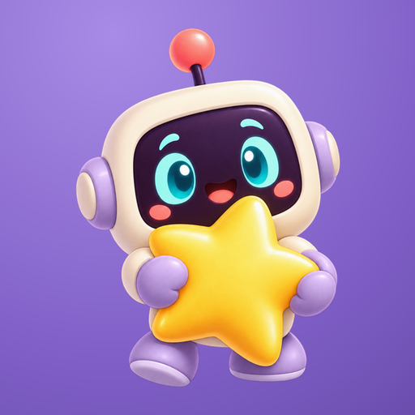
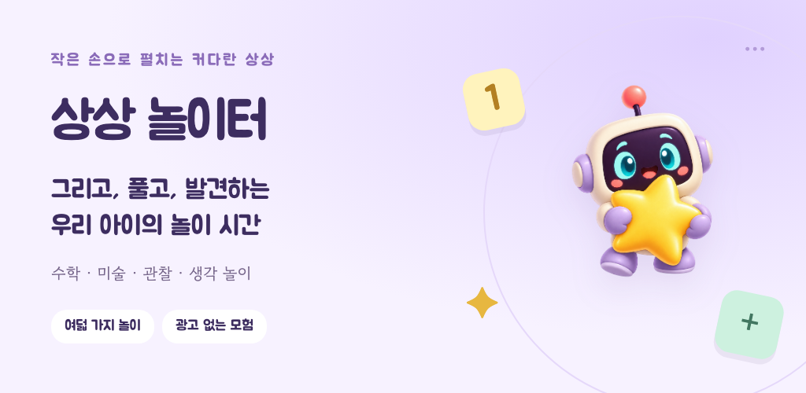
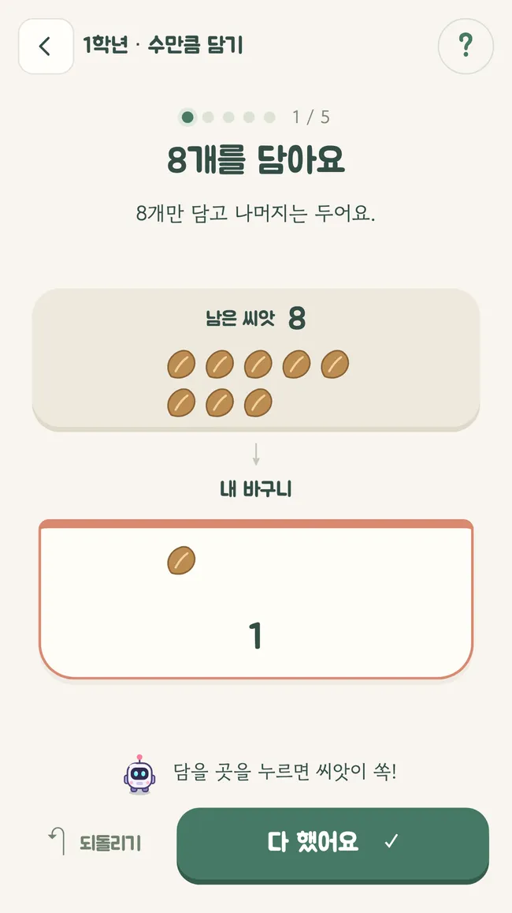
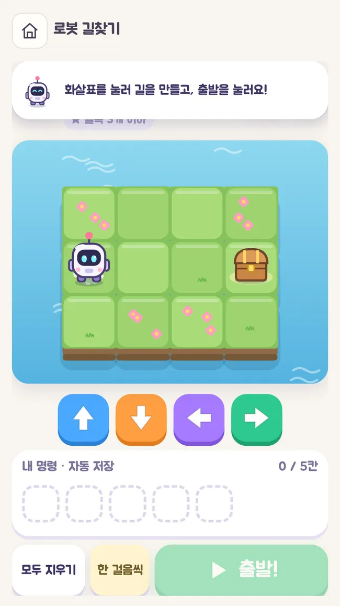
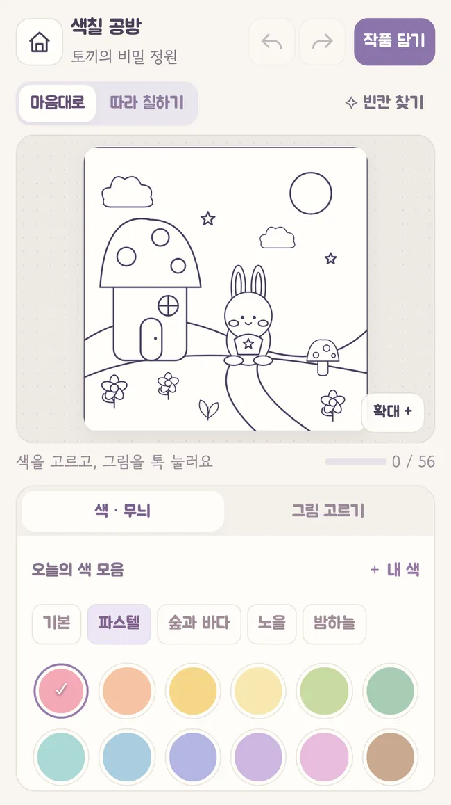

손으로 만지는 수학
Hands-on math
씨앗을 옮기고, 숫자를 나누며 차근차근 이해해요. 수학교실은 초1~초6 권장 120단계예요.
Move seeds and explore numbers in 120 math stages, suggested for grades 1–6.

상상 놀이터숫자를 옮기고, 시곗바늘을 돌리고, 토리와 길을 찾아요. 배우는 순간이 놀이가 되는 상상 놀이터.
Move numbers, turn clock hands, and find a path with Tori. Discover a playground for learning through play.

씨앗을 옮기고, 숫자를 나누며 차근차근 이해해요. 수학교실은 초1~초6 권장 120단계예요.
Move seeds and explore numbers in 120 math stages, suggested for grades 1–6.
시곗바늘을 돌리고 로봇에게 길을 알려줘요. 물길을 연결하고 숫자 마을도 탐험해요.
Turn clock hands, guide a robot, connect waterways and explore number towns.
색칠과 그림 그리기, 숨은그림찾기를 즐기고 모은 별로 스티커 북을 꾸며요.
Color, draw, find hidden objects and decorate a sticker book with earned stars.



실제 앱 화면으로 만든 28초 소개 영상이에요. 배경음이 포함되어 있어요.
A 28-second introduction using actual app screens, with background music.
Android 비공개 테스트 버전이 준비되어 있어요. 대한민국에서 Google 계정으로 참여할 수 있습니다.
An Android closed test is available in South Korea with a Google account.
공통 그룹에 한 번 가입한 뒤 참여할 앱마다 테스트 참여를 선택해 주세요. 새 그룹의 Play 연결이 반영되기까지 시간이 걸릴 수 있어요. 기존 sunshore-testers 그룹이나 해당 앱의 기존 테스터 그룹에 가입해 참여 중이라면 다시 가입할 필요가 없어요. 접근할 수 없다면 나중에 다시 시도하거나 문의해 주세요. 일부 콘텐츠는 무료로 체험할 수 있으며, 전체 이용권의 Play 결제는 준비 중이에요.
Join the shared group once, then opt in separately for each app. The new group may take time to become available in Play. If you already participate through the existing sunshore-testers group or this app’s previous tester group, you do not need to join again. If the test page is unavailable, try again later or contact us. Some content is free to try; Play purchases for full access are still in preparation.
광고·분석 SDK와 인터넷 권한이 없고, 아동의 놀이 데이터를 서버로 전송하지 않아요.
No advertising or analytics SDKs, internet permission, or transmission of children's play data to a server.